Actor-Critic
A3C and actor-critic architectures
1 - Distributed RL
Advantage actor-critic
- Let’s consider an n-step advantage actor-critic:
\[ A^n_t = R_t^n - V_\varphi (s_t) = \sum_{k=0}^{n-1} \gamma^{k} \, r_{t+k+1} + \gamma^n \, V_\varphi(s_{t+n}) - V_\varphi (s_t) \]
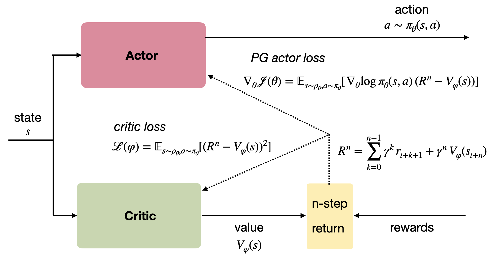
Advantage actor-critic
The advantage actor-critic is strictly on-policy:
The critic must evaluate actions selected the current version of the actor \(\pi_\theta\), not an old version or another policy.
The actor must learn from the current value function \(V^{\pi_\theta} \approx V_\varphi\).
\[ \begin{cases} \nabla_\theta \mathcal{J}(\theta) = \mathbb{E}_{s_t \sim \rho_\theta, a_t \sim \pi_\theta}[\nabla_\theta \log \pi_\theta (s_t, a_t) \, (R^n_t - V_\varphi(s_t)) ] \\ \\ \mathcal{L}(\varphi) = \mathbb{E}_{s_t \sim \rho_\theta, a_t \sim \pi_\theta}[(R^n_t - V_\varphi(s_t))^2] \\ \end{cases} \]
- We cannot use an experience replay memory to deal with the correlated inputs, as it is only for off-policy methods.
Distributed RL
- We cannot get an uncorrelated batch of transitions by acting sequentially with a single agent.

- A simple solution is to have multiple actors with the same weights \(\theta\) interacting in parallel with different copies of the environment.
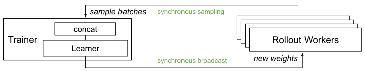
Each rollout worker (actor) starts an episode in a different state: at any point of time, the workers will be in uncorrelated states.
From time to time, the workers all send their experienced transitions to the learner which updates the policy using a batch of uncorrelated transitions.
After the update, the workers use the new policy.
Distributed RL
{{< youtube iaF43Ze1oeI >}}Distributed RL
Initialize global policy or value network \(\theta\).
Initialize \(N\) copies of the environment in different states.
while True:
for each worker in parallel:
- Copy the global network parameters \(\theta\) to each worker:
\[ \theta_k \leftarrow \theta \]
Initialize an empty transition buffer \(\mathcal{D}_k\).
Perform \(d\) steps with the worker on its copy of the environment.
Append each transition \((s, a, r, s')\) to the transition buffer.
join(): wait for each worker to terminate.
Gather the \(N\) transition buffers into a single buffer \(\mathcal{D}\).
Update the global network on \(\mathcal{D}\) to obtain new weights \(\theta\).
2 - A3C: Asynchronous advantage actor-critic
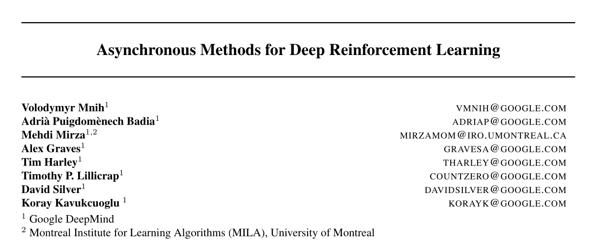
A3C: Asynchronous advantage actor-critic
@Mnih2016 proposed the A3C algorithm (asynchronous advantage actor-critic).
The stochastic policy \(\pi_\theta\) is produced by the actor with weights \(\theta\) and learned using :
\[ \nabla_\theta \mathcal{J}(\theta) = \mathbb{E}_{s_t \sim \rho_\theta, a_t \sim \pi_\theta}[\nabla_\theta \log \pi_\theta (s_t, a_t) \, (R^n_t - V_\varphi(s_t)) ] \]
- The value of a state \(V_\varphi(s)\) is produced by the critic with weights \(\varphi\), which minimizes the mse with the n-step return:
\[\mathcal{L}(\varphi) = \mathbb{E}_{s_t \sim \rho_\theta, a_t \sim \pi_\theta}[(R^n_t - V_\varphi(s_t))^2]\]
\[R^n_t = \sum_{k=0}^{n-1} \gamma^{k} \, r_{t+k+1} + \gamma^n \, V_\varphi(s_{t+n})\]
Both the actor and the critic are trained on batches of transitions collected using parallel workers.
Two things are different from the general distributed approach: workers compute partial gradients and updates are asynchronous.
A3C: Asynchronous advantage actor-critic
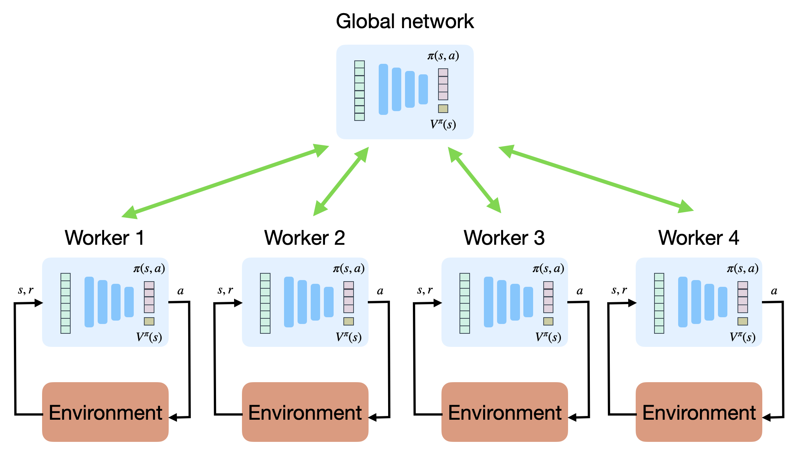
def worker(\(\theta\), \(\varphi\)):
Initialize empty transition buffer \(\mathcal{D}\). Initialize the environment to the last state visited by this worker.
for \(n\) steps:
- Select an action using \(\pi_\theta\), store the transition in the transition buffer.
for each transition in \(\mathcal{D}\):
- Compute the n-step return in each state \(R^n_t = \displaystyle\sum_{k=0}^{n-1} \gamma^{k} \, r_{t+k+1} + \gamma^n \, V_\varphi(s_{t+n})\)
Compute policy gradient for the actor on the transition buffer: \[d\theta = \nabla_\theta \mathcal{J}(\theta) = \frac{1}{n} \sum_{t=1}^n \nabla_\theta \log \pi_\theta (s_t, a_t) \, (R^n_t - V_\varphi(s_t))\]
Compute value gradient for the critic on the transition buffer: \[d\varphi = \nabla_\varphi \mathcal{L}(\varphi) = -\frac{1}{n} \sum_{t=1}^n (R^n_t - V_\varphi(s_t)) \, \nabla_\varphi V_\varphi(s_t)\]
return \(d\theta\), \(d\varphi\)
A2C: global networks
Initialize actor \(\theta\) and critic \(\varphi\).
Initialize \(K\) workers with a copy of the environment.
for \(t \in [0, T_\text{total}]\):
for \(K\) workers in parallel:
- \(d\theta_k\), \(d\varphi_k\) = worker(\(\theta\), \(\varphi\))
join()
Merge all gradients:
\[d\theta = \frac{1}{K} \sum_{i=1}^K d\theta_k \; ; \; d\varphi = \frac{1}{K} \sum_{i=1}^K d\varphi_k\]
- Update the actor and critic using gradient ascent/descent:
\[\theta \leftarrow \theta + \eta \, d\theta \; ; \; \varphi \leftarrow \varphi - \eta \, d\varphi\]
A3C: Asynchronous advantage actor-critic
The previous slide depicts A2C, the synchronous version of A3C.
A2C synchronizes the workers (threads), i.e. it waits for the \(K\) workers to finish their job before merging the gradients and updating the global networks.
A3C is asynchronous:
the partial gradients are applied to the global networks as soon as they are available.
No need to wait for all workers to finish their job.
As the workers are not synchronized, this means that one worker could be copying the global networks \(\theta\) and \(\varphi\) while another worker is writing them.
This is called a Hogwild! update: no locks, no semaphores. Many workers can read/write the same data.
It turns out NN are robust enough for this kind of updates.
A3C: asynchronous updates
Initialize actor \(\theta\) and critic \(\varphi\).
Initialize \(K\) workers with a copy of the environment.
for \(K\) workers in parallel:
for \(t \in [0, T_\text{total}]\):
Copy the global networks \(\theta\) and \(\varphi\).
Compute partial gradients:
\[d\theta_k, d\varphi_k = \text{worker}(\theta, \varphi)\]
- Update the global actor and critic using the partial gradients:
\[\theta \leftarrow \theta + \eta \, d\theta_k\]
\[\varphi \leftarrow \varphi - \eta \, d\varphi_k\]
A3C: Asynchronous advantage actor-critic
A3C does not use an experience replay memory, but relies on multiple parallel workers to distribute learning.
Each worker has a copy of the actor and critic networks, as well as an instance of the environment.
Weight updates are synchronized regularly though a master network using Hogwild!-style updates (every \(n=5\) steps!).
Because the workers learn different parts of the state-action space, the weight updates are not very correlated.
It works best on shared-memory systems (multi-core) as communication costs between GPUs are huge.
As an actor-critic method, it can deal with continuous action spaces.
A3C : results
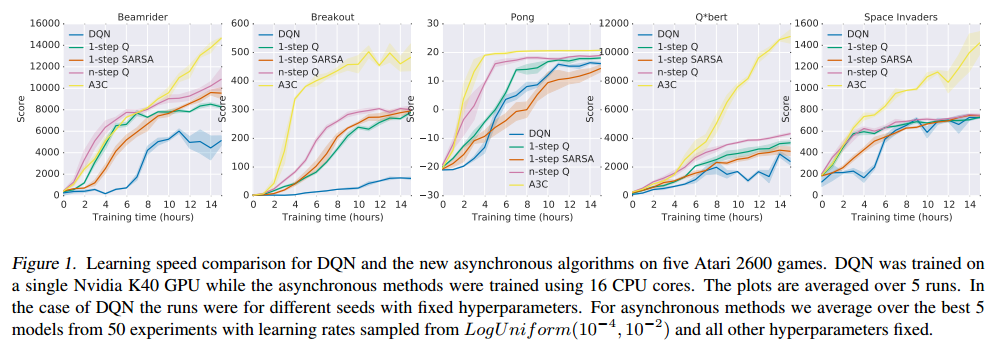
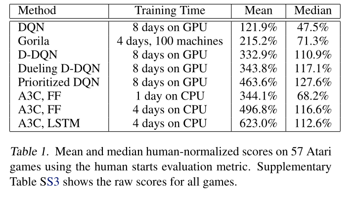
A3C set a new record for Atari games in 2016.
The main advantage is that the workers gather experience in parallel: training is much faster than with DQN.
LSTMs can be used to improve the performance.
A3C : results
- Learning is only marginally better with more threads:
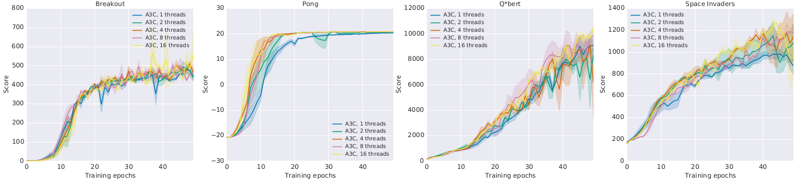
but much faster!
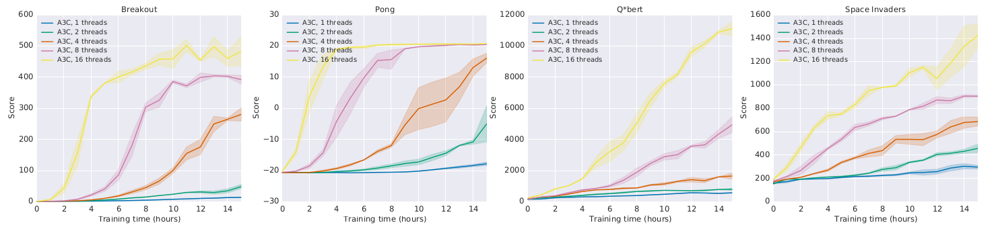
A3C: TORCS simulator
{{< youtube 0xo1Ldx3L5Q >}}A3C: Labyrinth
{{< youtube nMR5mjCFZCw >}}A3C: continuous control problems
{{< youtube Ajjc08-iPx8 >}}Comparison with DQN
- A3C came up in 2016. A lot of things happened since then…

3 - Actor-critic neural architectures
Actor-critic neural architectures
- We have considered that actor-critic architectures consist of two separate neural networks, both taking the state \(s\) (or observation \(o\)) as an input.
Each of these networks have their own loss function. They share nothing except the “data”.
Is it really the best option?
Early visual features
When working on images, the first few layers of the CNNs are likely to learn the same visual features (edges, contours).
It would be more efficient to share some of the extracted features.
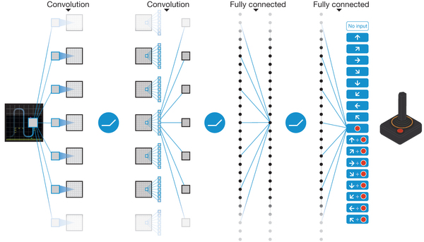
4 - Continuous stochastic policies
Continuous action spaces
One of the main advantages of actor-critic / PG methods over value-based methods is that they can deal with continuous action-spaces.
Suppose that we want to control a robotic arm with \(n\) degrees of freedom.
An action \(\mathbf{a}\) could be a vector of joint displacements:
\[\mathbf{a} = \begin{bmatrix} \Delta \theta_1 & \Delta \theta_2 & \ldots \, \Delta \theta_n\end{bmatrix}^T\]
The output layer of the policy network can very well represent this vector, but how would we implement exploration?
\(\epsilon\)-greedy and softmax action selection would not work, as all neurons are useful.
The most common solution is to use a stochastic Gaussian policy.
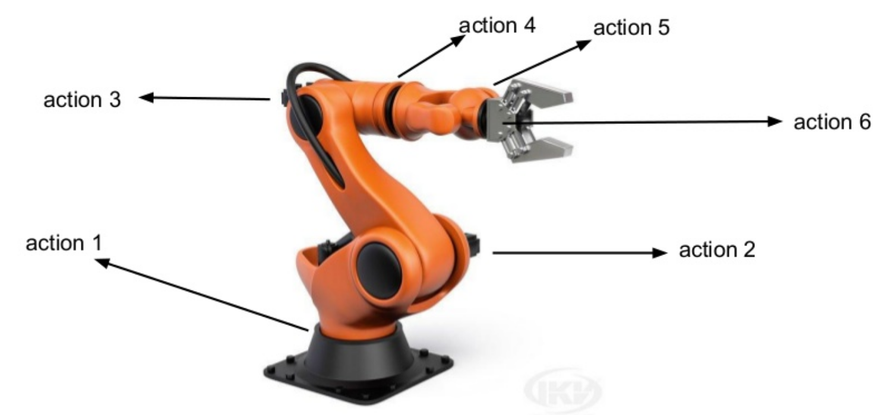

Gaussian policies
A Gaussian policy considers the vector \(\mathbf{a}\) to be sampled from the normal distribution \(\mathcal{N}(\mu_\theta(s), \sigma_\theta(s))\).
The mean \(\mu_\theta(s)\) and standard deviation \(\sigma_\theta(s)\) are output vectors of the actor with parameters \(\theta\).
Sampling an action from the normal distribution is done through the reparameterization trick:
\[\mathbf{a} = \mu_\theta(s) + \sigma_\theta(s) \, \xi\]
where \(\xi \sim \mathcal{N}(0, I)\) comes from the standard normal distribution.
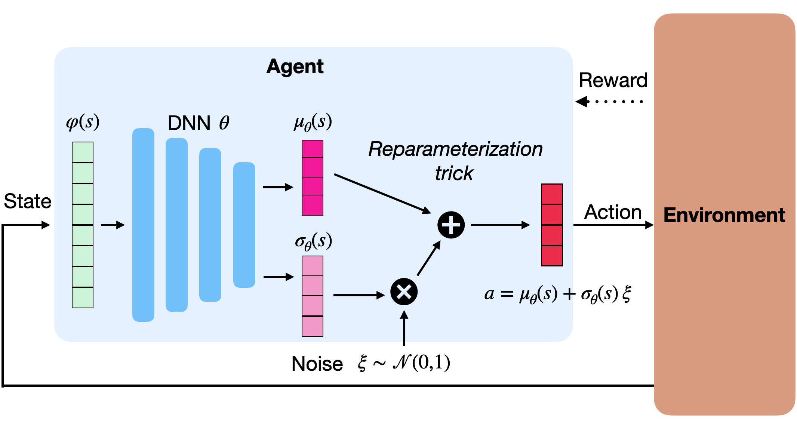
Gaussian policies
- The good thing with the normal distribution is that we know its pdf:
\[ \pi_\theta(s, a) = \frac{1}{\sqrt{2\pi\sigma^2_\theta(s)}} \, \exp -\frac{(a - \mu_\theta(s))^2}{2\sigma^2_\theta(s)} \]
- The log-likelihood \(\log \pi_\theta (s, a)\) is a simple differentiable function of \(\mu_\theta(s)\) and \(\sigma_\theta(s)\):
\[ \log \pi_\theta (s, a) = -\frac{(a - \mu_\theta(s))^2}{2\sigma^2_\theta(s)} - \frac{1}{2} \, \log 2\pi\sigma^2_\theta(s) \]
so we can easily compute its gradient w.r.t \(\theta\) and apply backpropagation:
\[ \begin{cases} \nabla_{\mu_\theta(s)} \log \pi_\theta (s, a) = \dfrac{a - \mu_\theta(s)}{\sigma_\theta(s)^2} \\ \\ \nabla_{\sigma_\theta(s)} \log \pi_\theta (s, a) = \dfrac{(a - \mu_\theta(s))^2}{\sigma_\theta(s)^3} - \dfrac{1}{\sigma_\theta(s)}\\ \end{cases} \]
Gaussian policies
- A Gaussian policy samples actions from the normal distribution \(\mathcal{N}(\mu_\theta(s), \sigma_\theta(s))\), with \(\mu_\theta(s)\) and \(\sigma_\theta(s)\) being the output of the actor.
\[\mathbf{a} = \mu_\theta(s) + \sigma_\theta(s) \, \xi\]
- The score \(\nabla_\theta \log \pi_\theta (s, a)\) can be obtained easily using the output of the actor:
\[ \begin{cases} \nabla_{\mu_\theta(s)} \log \pi_\theta (s, a) = \dfrac{a - \mu_\theta(s)}{\sigma_\theta(s)^2} \\ \\ \nabla_{\sigma_\theta(s)} \log \pi_\theta (s, a) = \dfrac{(a - \mu_\theta(s))^2}{\sigma_\theta(s)^3} - \dfrac{1}{\sigma_\theta(s)}\\ \end{cases} \]
The rest of the score (\(\nabla_\theta \mu_\theta(s)\) and \(\nabla_\theta \sigma_\theta(s)\)) is the problem of tensorflow/pytorch.
This is the same reparametrization trick used in variational autoencoders to allow backpropagation to work through a sampling operation.
Beta distributions are an even better choice to parameterize stochastic policies [@Chou2017].